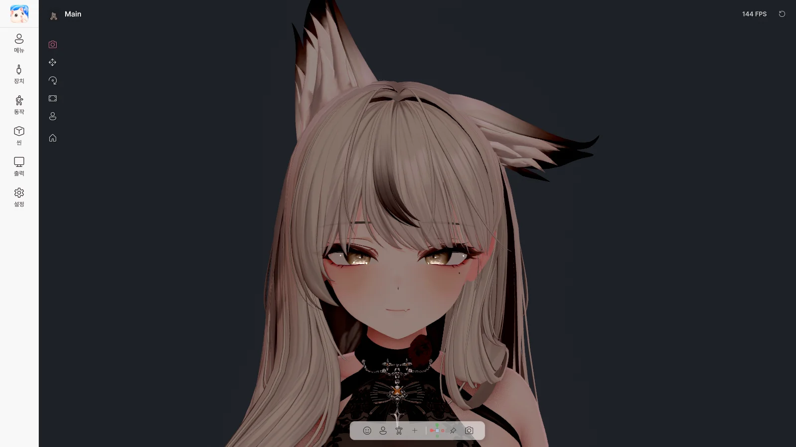

4. 메인 화면#

메인 화면
왼쪽 메뉴#
| 메뉴 |
하는 일 |
가이드 |
| 로고 |
다시 시작 (시작 화면으로) |
3장 |
| 메뉴 |
아바타의 Expression 메뉴, 제스처, 퀵 액션 |
5장 |
| 장치 |
웹캠, 마이크, 트래킹 소스, 외부 트래커 |
6장 |
| 동작 |
얼굴, 몸, 손과 책상 |
7장 |
| 씬 |
배경, 조명, 효과, 포징, 오브젝트 |
8장 |
| 출력 |
Spout2, 가상 카메라, 화면 공유 |
9장 |
| 설정 |
창, 성능, 언어, 단축키, 라이선스, 업데이트 |
10장 |
업데이트가 있으면 설정에 초록 점이 표시됩니다.
| 항목 |
하는 일 |
| 아바타 이름 (왼쪽) |
아바타 전환·추가 (3장) |
| FPS (오른쪽) |
현재 프레임. 누르면 프레임 레이트 변경 |
| 상태 표시 |
지금 사용 중인 트래커·마이크·출력·화면 공유 상태 |
| ⟲ 초기화 |
트래킹·손·PhysBone 등을 처음 상태로 (5장). 우클릭하면 정면 보정·카메라 시작 뷰·PhysBone 원위치만 따로 |
| 퀵 액션 버튼 |
내가 등록한 버튼 (5장) |
아래쪽 툴바#
| 버튼 |
하는 일 |
| 얼굴 / 상반신 / 전신 |
카메라 구도 바꾸기 |
| 저장된 뷰 |
저장해 둔 카메라 위치로 이동 (우클릭: 이름 변경·순서·숨기기·시작 뷰·삭제) |
| + |
지금 카메라를 뷰로 저장 |
| 퀵 액션 버튼 |
내가 등록한 버튼 |
| 방향 기즈모 |
정면·옆·위 등 방향에서 보기, 원근 / 직교 전환 |
| 카메라 잠금 |
마우스로 카메라가 움직이지 않게 |
| 카메라 |
카메라 설정 (아래) |
툴바는 드래그로 옮길 수 있고, 우클릭하면 투명도를 바꿀 수 있습니다.
카메라 설정#
| 항목 |
하는 일 |
| PNG 저장 / 폴더 열기 |
UI 없이 화면을 사진으로 저장 |
| 카메라 잠금 |
카메라 고정 |
| 렌즈 |
원근 / 직교, 화각, 방향 |
| 저장된 뷰 |
뷰 목록 관리, 현재 카메라 저장, 시작 뷰 |
| 마우스 |
회전·이동·줌 속도, 세로 회전 반전 |
| 왼쪽 마우스로 PhysBone 잡기 |
마우스로 머리카락·꼬리 등 잡기 (아래) |
마우스와 키보드#
| 조작 |
하는 일 |
| 오른쪽 드래그 |
카메라 회전 |
| 휠 드래그 / Shift + 오른쪽 드래그 |
카메라 이동 |
| 휠 |
줌 |
| 빈 곳 더블클릭 |
아바타 전신이 보이게 다시 맞추기 |
Avatar Live 창이 앞에 있을 때 쓰는 키입니다. 게임 중에도 쓰는 키는 전역 단축키로 따로 정합니다.
| 키 |
하는 일 |
| F1 |
클린 뷰 (UI 숨기기 / 보이기) |
| Ctrl + 1 / 2 / 3 |
얼굴 / 상반신 / 전신 |
| Ctrl + 4 … 9 |
저장된 뷰 |
| F |
회전 중심을 아바타로 |
| Ctrl + = / − |
UI 크기 |
| Alt + Enter |
전체 화면 / 창 |
| Esc |
메뉴 닫기, 전체 화면 끄기 |
| Ctrl + Z / Ctrl + Y |
아바타·오브젝트 배치 되돌리기 / 다시 하기 |
클린 뷰#
F1을 누르면 UI가 모두 사라지고 배경과 아바타만 남습니다. 트래킹과 출력은 계속됩니다. 다시 F1이면 돌아옵니다.
씬 도구 (왼쪽 아이콘)#
| 도구 |
하는 일 |
| 카메라 |
기본 모드 |
| 이동 / 회전 / 크기 |
뷰에서 아바타 위치·방향·크기 바꾸기 (우클릭: 그 값만 초기화) |
| 포징 (Pro) |
뼈를 골라 자세 만들기 (11장) |
| ⌂ |
아바타를 가운데로 |
PhysBone 잡기#
뷰에서 머리카락·귀·꼬리 같은 흔들리는 부분을 마우스로 잡을 수 있습니다.
| 조작 |
하는 일 |
| 왼쪽 드래그 |
잡아당기기 |
| 잡은 채 휠 |
가깝게 / 멀게 |
| 잡은 채 오른쪽 클릭 |
그 자리에 포즈 고정 |
| 포즈 고정 해제 |
고정한 것 풀기 |
아바타의 PhysBone 설정에서 잡기를 허용한 부분만 잡힙니다.
창과 트레이#
| 동작 |
결과 |
| 창 X |
트레이로 숨기기 (아바타·출력은 계속) |
| 트레이 아이콘 더블클릭 |
다시 열기 |
| 트레이 우클릭 |
Avatar Live 열기 / Clean View로 열기 / 종료 |
화면 크기와 테마#
UI 크기와 라이트·다크 테마, 패널 위치는 설정 › UI에서 바꿉니다.
최종 업데이트: 2026-10-09